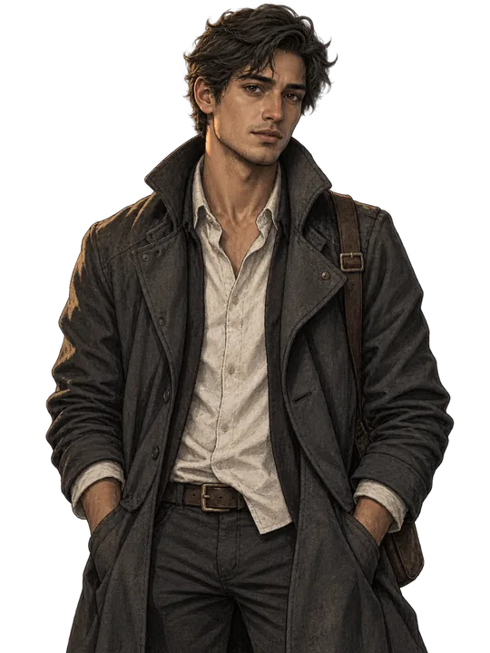
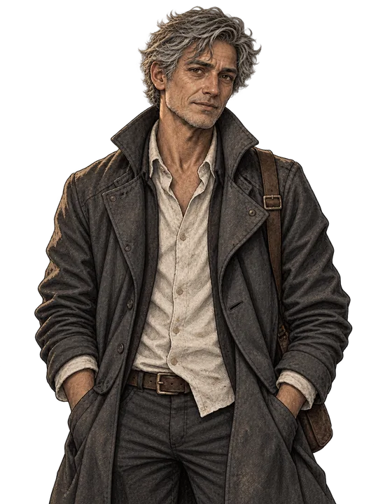
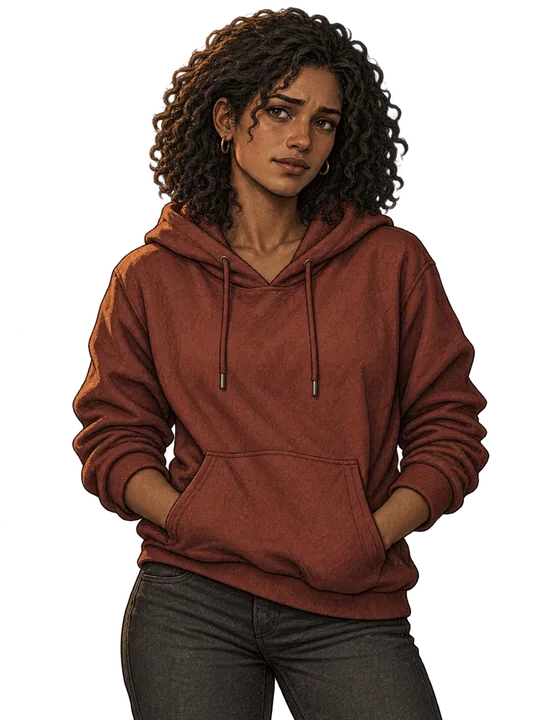
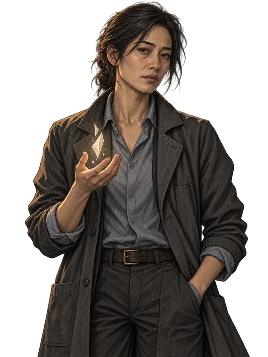
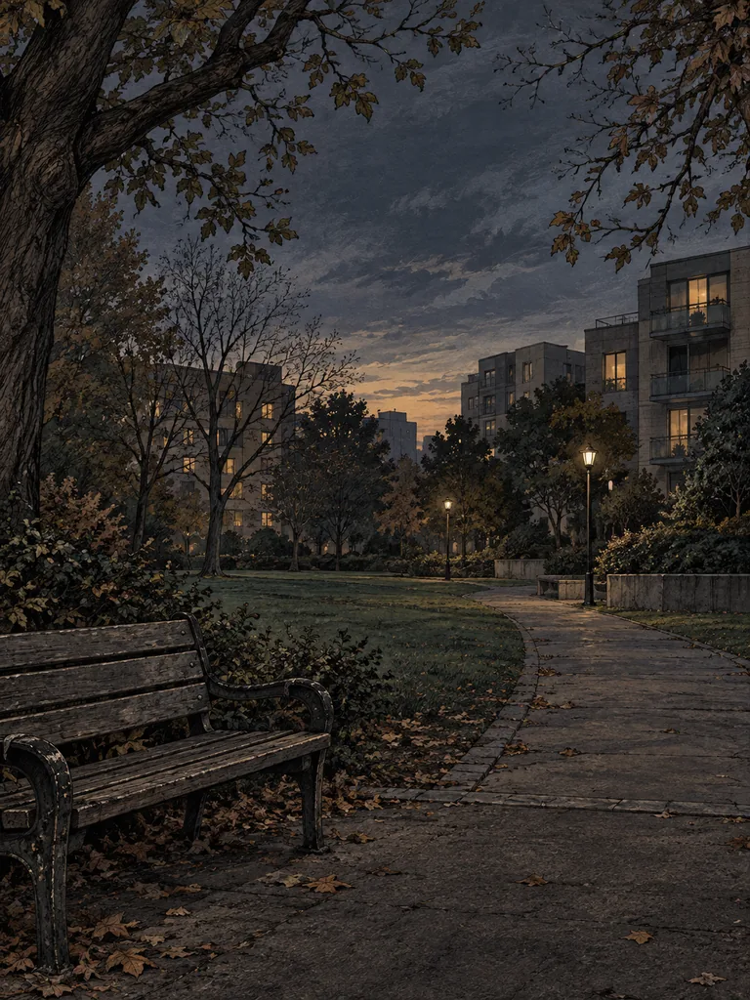

Estudio de identidad
Juventud
Un rostro humano antes de cualquier destino.
DESARROLLO · TASK 03
Estudios de dirección artística. Vera adulta y el parque están integrados; los protagonistas y la figura Despertada son candidatos, sin identidad histórica, rango ni mecánicas nuevas.

Estudio de identidad
Un rostro humano antes de cualquier destino.

Continuidad de identidad
El tiempo cambia el rostro; permanece la persona.

Vida cotidiana
Ropa, expresión y una decisión por tomar.

Ejemplo visual no canónico
Una luz que no pertenece al espacio cotidiano.
